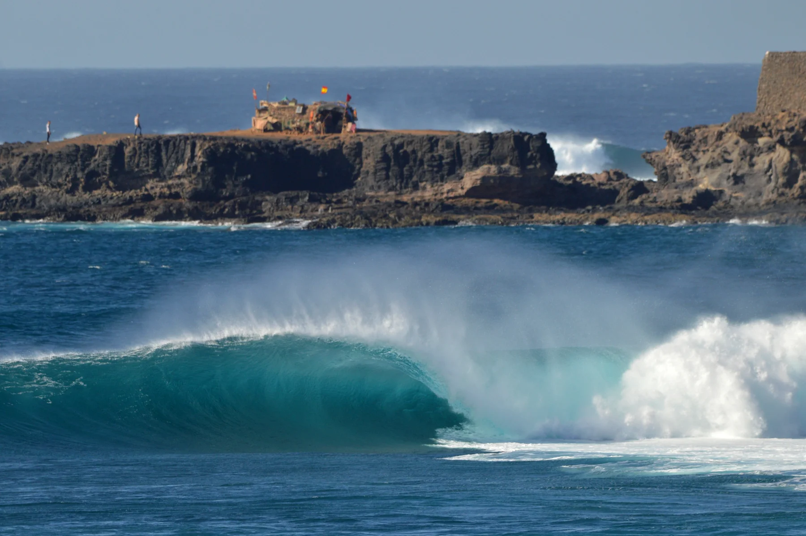
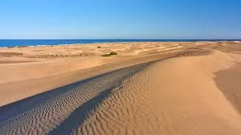
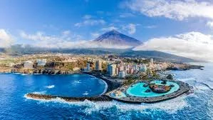
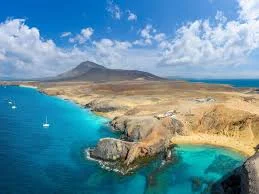
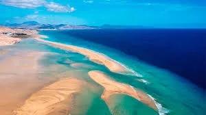
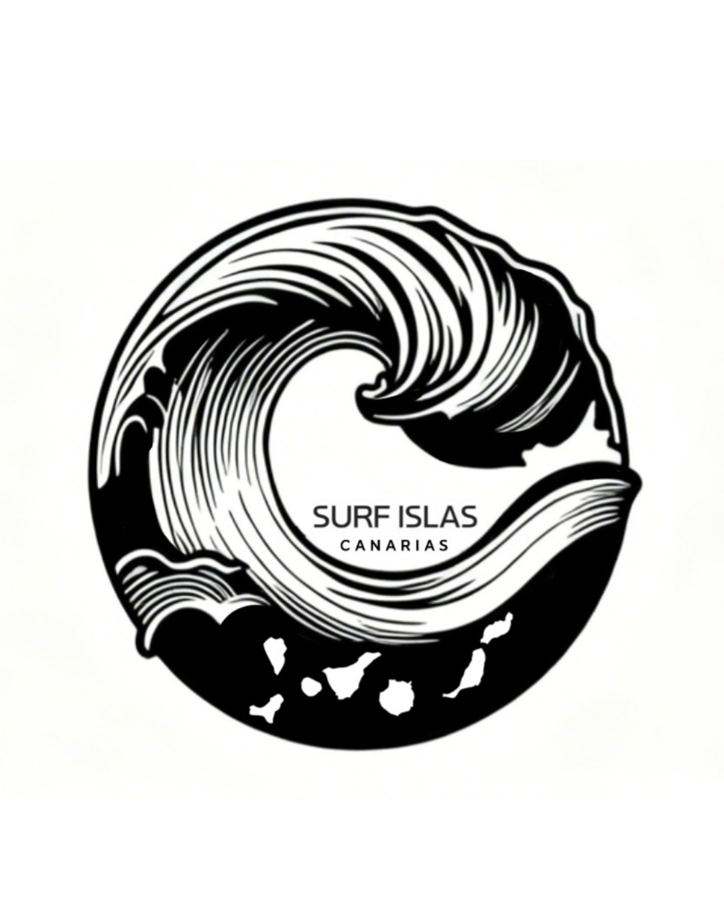

SURF ISLAS CANARIAS
EL ATLÁNTICO
SE VIVE AQUÍ.
Olas, viento y una comunidad que mira al mar.
Descubre el surf de nuestras islas.
UN ARCHIPIÉLAGO. MUCHAS FORMAS DE SENTIRLO.
Elige tu isla.

Gran Canaria
Ciudad, costa y olas con carácter.

Tenerife
Del norte atlántico al viento del sur.

Lanzarote
El océano encuentra el paisaje volcánico.

Fuerteventura
Arena, viento y horizontes abiertos.
EN EL RADAR
El mar también reúne.
Frontón King.
La cita del bodyboard.
Gáldar vuelve a mirar hacia El Frontón. Consulta la ventana de competición y sigue las jornadas desde sus canales oficiales.
Guía del eventoPROYECTO PROPIO · HORIZONTE 2027
Lanzarote
Wind Festival.
Deporte náutico, inclusión y sostenibilidad. Una propuesta de ANSA en desarrollo.
Conocer el proyectoSURF. BODYBOARD. VIENTO.
Encuentra tu manera.

DESDE LAS ISLAS, PARA SU COMUNIDAD
Más que una previsión.
Una forma de conectar.
Compartimos spots, eventos, imágenes y cultura del mar con una mirada canaria, cercana y respetuosa. Surf Islas Canarias conecta la comunicación deportiva con los proyectos de ANSA.